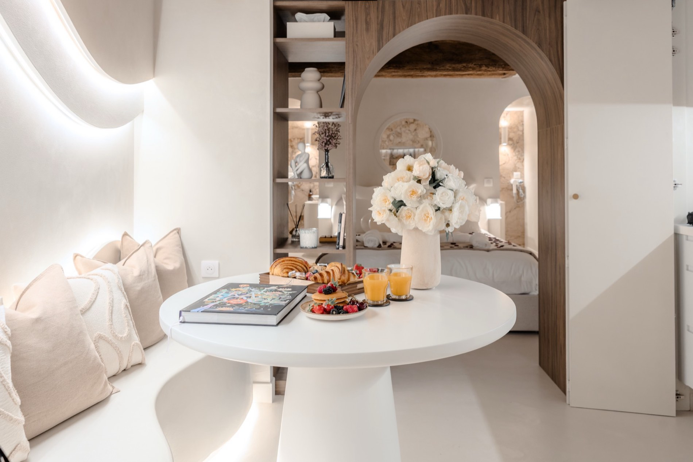

Villefranche-sur-Saône en couple :
le guide d'un week-end au ralenti
Capitale du Beaujolais, à quarante minutes de Lyon. Une ville que l'on traverse souvent sans s'arrêter, et qui mérite exactement l'inverse.

Villefranche-sur-Saône se visite mal en touriste pressé, et très bien en couple qui n'a rien à prouver. Sous-préfecture du Rhône et capitale historique du Beaujolais, la ville tient dans une longue rue et s'ouvre, à vingt minutes, sur l'un des plus beaux vignobles de France.
La rue Nationale, à pied
L'artère principale traverse toute la ville. Elle a une particularité que l'on remarque en levant la tête : derrière les devantures modernes se cachent des façades Renaissance et des cours intérieures héritées de l'époque où Villefranche s'enrichissait du commerce. Marchez lentement, regardez au-dessus du rez-de-chaussée.
Le marché du matin
Rendez-vous local par excellence. C'est l'endroit où acheter de quoi composer un petit-déjeuner ou un apéritif à ramener dans votre suite — souvent plus agréable qu'un restaurant, quand on est venu pour être seuls.
Les Pierres Dorées, à vingt minutes
C'est la vraie raison de venir. Au sud-ouest de la ville commence le pays des Pierres Dorées, où les villages sont bâtis dans un calcaire ocre qui prend une couleur d'or en fin de journée.
- Oingt — village perché, ruelles pavées, vue sur les coteaux
- Ternand — plus confidentiel, remparts et point de vue
- Bagnols — château et façades dorées
- Charnay — belvédère sur la vallée de la Saône
Comptez une demi-journée en boucle, sans se presser. La lumière de fin d'après-midi est de loin la plus belle.
Le vignoble, à votre rythme
Le Beaujolais commence aux portes de la ville. Beaucoup de domaines reçoivent sur rendez-vous : un simple message la veille suffit souvent, et l'accueil est nettement plus personnel qu'en visite libre.
Deux domaines dans un après-midi, c'est un bon rythme. Trois, c'est déjà une journée de travail.
Les bords de Saône
Moins spectaculaires que les coteaux, mais parfaits pour une fin de journée : les chemins qui longent la rivière offrent une promenade plate et calme, à faire après le déjeuner quand on n'a envie de rien de plus ambitieux.
Quand venir ?
- Printemps — la région reverdit, les terrasses rouvrent, peu de monde
- Été — soirées longues, mais les caves voûtées gardent leur fraîcheur
- Septembre — les vendanges : la région à son plus vivant
- Novembre — le Beaujolais nouveau, festif mais très fréquenté
- Hiver — la meilleure saison pour un séjour spa, et la plus calme
Combien de temps rester ?
Deux nuits sont le bon format : une journée pour les villages et le vignoble, une autre pour ne rien faire du tout. Si vous ne disposez que d'une nuit, sacrifiez les visites plutôt que le temps passé dans votre logement — c'est ce dont vous vous souviendrez.
Comment venir
Villefranche est desservie par l'autoroute A6 et par le TER depuis Lyon, avec un temps de trajet d'environ une demi-heure dans les deux cas. L'aéroport Lyon–Saint-Exupéry est accessible en voiture. Une fois sur place, le centre se parcourt entièrement à pied.

La Voûte des Sens
Une voûte de pierre, un bain à remous,
et personne d'autre.
À Villefranche-sur-Saône, à quarante minutes de Lyon. Deux personnes, une suite, arrivée autonome.